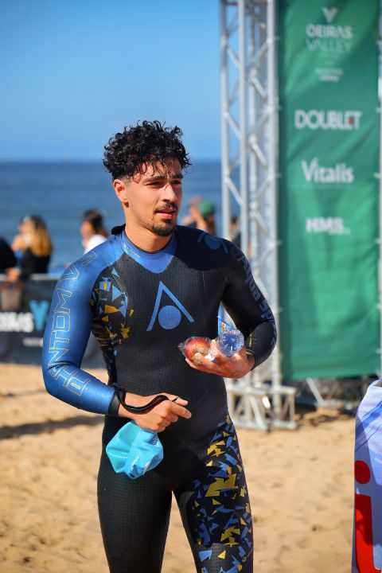

2026 · Ordem dos Engenheiros
Como Lidar com Pessoas Difíceis
Formação complementar.
Biomedical Technology · Sport · Innovation
Estudante finalista de Tecnologia Biomédica, atleta federado, árbitro de natação e interessado na interseção entre tecnologia, saúde, dados e desempenho humano.

Um percurso construído entre a Tecnologia Biomédica, o desporto de competição, a emergência médica, a ciência e a inovação em saúde.
Sou estudante finalista da Licenciatura em Tecnologia Biomédica no Politécnico de Setúbal e membro estudante da Ordem dos Engenheiros.
O meu percurso combina formação em tecnologia e saúde com uma forte ligação ao desporto, sobretudo à natação pura e às águas abertas.
Tenho interesse por dispositivos médicos, processamento de sinais biomédicos, análise de dados clínicos, inteligência artificial aplicada à medicina e inovação em saúde.
Sinais biomédicos, MRI, dispositivos médicos, instrumentação e tecnologia aplicada à saúde.
Python, MATLAB, análise de dados clínicos, processamento de sinais e inteligência artificial.
Atleta federado com percurso em natação pura, águas abertas e salvamento aquático desportivo.
Juiz de natação pura e juiz de águas abertas, com participação em competições nacionais.
Nadador-salvador, tripulante de ambulância de socorro e formação em emergência médica.
Experiência em projetos de inovação em saúde, empreendedorismo e Patient Innovation.
Algumas das etapas que marcaram a evolução académica, profissional e desportiva.
Uma presença constante no percurso pessoal.
Formação e experiência prática em emergência.
Formação superior no Politécnico de Setúbal.
Projetos, internships e contacto com ecossistemas de inovação.
Entrada no circuito oficial de arbitragem.
Um novo capítulo competitivo.
Uma formação multidisciplinar entre engenharia, tecnologia, programação e saúde.
Formação adicional construída em paralelo com o percurso académico.
Formação complementar.
1.ª Conferência de Imagem Médica Avançada e Inteligência Artificial.
Curso elementar + estágio.
Formação específica para informático em natação pura/adaptada.
Formação em curso.
Emergências médicas e suporte básico de vida.
Curso e certificação de navegação.
Workshop Code for ALL.
NTT Data.
Aplicações em reabilitação e interfaces.
Participação em evento científico.
Análise de dados, design mobile e desenvolvimento web.
Gestão e manutenção de equipamentos médicos.
Formação em emergência e reanimação.
Formação profissional em socorrismo.
Formação certificada.
Formação certificada.
Experiência académica, extracurricular e profissional em contextos de saúde, tecnologia e inovação.
Projeto de inovação relacionado com hipersensibilidade auditiva, desenvolvido em equipa.
2.º lugar · Innovation Day | LTBJuiz de 3.º de Natação Pura e Juiz de 1.º de Águas Abertas.
Trabalho relacionado com processamento de sinais biomédicos.
Recolha de dados e apoio ao desenvolvimento de parcerias.
Participação em publicidade LUSO.
Design de cartão profissional e criação e gestão do website da empresa.
Segmentação tumoral e previsão clínica através de imagens de ressonância magnética mamária.
Contacto com empresas portuguesas e internacionais para patrocínios do Tec2Med Summit.
Staff em eventos de inovação e investigação, incluindo Patient Innovation BootCamp e Estoril Conferences.
Experiência operacional em salvamento e emergência.
Experiência como Tripulante de Ambulância de Socorro.
Projetos científicos e académicos que ligam tecnologia, medicina e inovação.
Poster científico sobre a utilização de nanopartículas de ouro em aplicações relacionadas com oncologia.
Trabalho sobre a aplicação da técnica CRISPR em contexto de prevenção e investigação oncológica.
Trabalho desenvolvido no IBEB com imagens de ressonância magnética mamária, segmentação tumoral e previsão clínica.
“Patient Innovation (MSPs) para envolver os doentes no processo de inovação social”.
Uma base de dados desportiva com provas de natação pura e águas abertas. Filtra por modalidade, ano, piscina ou pesquisa.
Diferentes etapas, diferentes contextos e a mesma ligação ao desporto.

Primeiros registos competitivos representados neste percurso.

Sociedade Filarmónica União Artística Piedense.

Clube Instrução e Recreio do Laranjeiro.

Natação, águas abertas e salvamento aquático desportivo.

Novo capítulo ligado à natação e águas abertas.

Novo capítulo competitivo.
Para além de competir, existe também a experiência de acompanhar as provas enquanto oficial.
participações registadas em funções de arbitragem, secretariado e apoio à organização de provas.
Resultados e momentos que fazem parte do percurso desportivo.
Campeão Nacional de Águas Abertas, associado ao percurso competitivo em AA20+.
Campeão do Circuito Nacional de Águas Abertas AA20+ em 2024.
3.º lugar geral em 2025 nos 1.600 m, Mass Participation Event.
4.º lugar geral na Grande Descida de Castelo de Bode, 2026.
Presença no pódio em 2023, 2024 e 2025.
Resultados de pódio em várias edições entre 2021 e 2026.
1.º lugar geral em 2026 nos 1.600 m.
Participação em diferentes edições do Campeonato Nacional de Águas Abertas.
Percurso competitivo e formação em salvamento aquático desportivo.
Fotografias e vídeos do percurso académico, profissional e desportivo.


Projetos académicos, tecnológicos e de inovação desenvolvidos ao longo do percurso.
Tecnologia e inovação para pessoas com hipersensibilidade auditiva.
EXPLORAR →Informação clínica essencial acessível em contexto de emergência.
EXPLORAR →Desenvolvimento de presença digital para uma clínica de fisioterapia.
EXPLORAR →Processamento de imagem médica e segmentação tumoral.
EXPLORAR →Dados, resultados e histórico desportivo num único espaço.
EXPLORAR →Um CV transformado numa experiência digital interativa.
EXPLORAR →Outras experiências que completam o percurso.
AAIPS — 2022–2024: participação em 3 Campeonatos
Nacionais Universitários.
FAIPL — 2025: participação em 1 Campeonato
Nacional Universitário.
Abrigo da Mãozinhas — dezembro de 2019. Apoio à proteção animal, incluindo transporte e organização de água, mantimentos e cobertores.
Português — nativo.
Inglês — B1 / intermédio.
Carta de condução B.
Carta de Patrão Local.
Nadador Salvador.
Tripulante de Ambulância de Socorro.
Juiz de Natação Pura e Águas Abertas.
Tecnologia, saúde, inovação, desporto ou colaboração: estou disponível para novos projetos e oportunidades.
Tecnologia Biomédica · Sport · Innovation
Uma versão tradicional do percurso, para quem prefere consultar o CV de forma rápida.